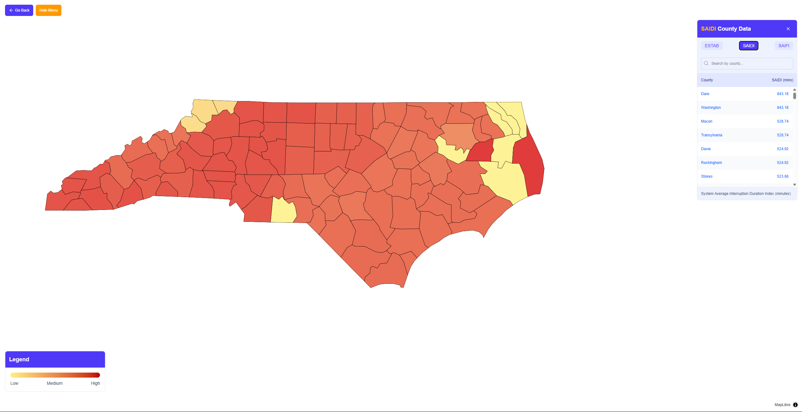
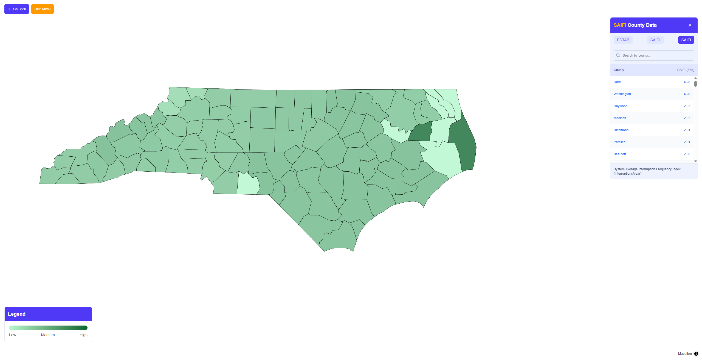
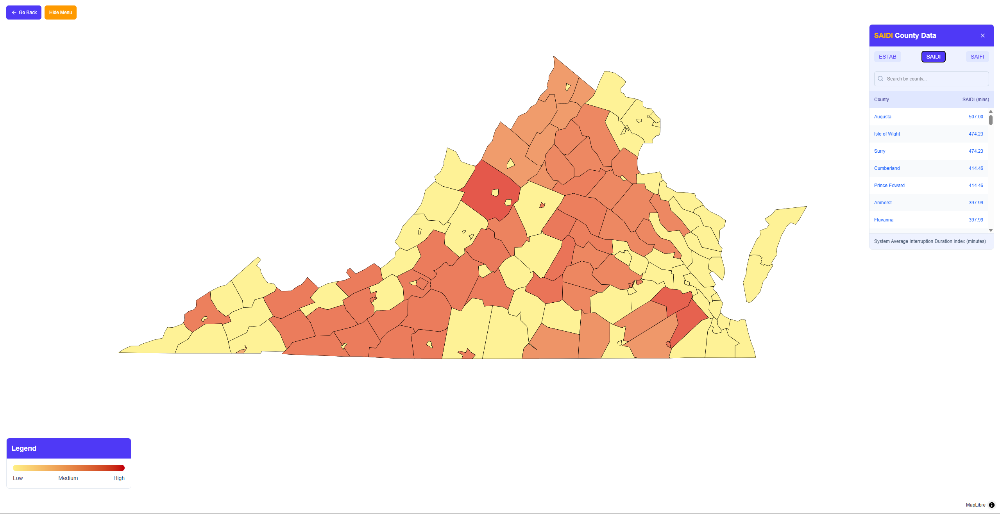
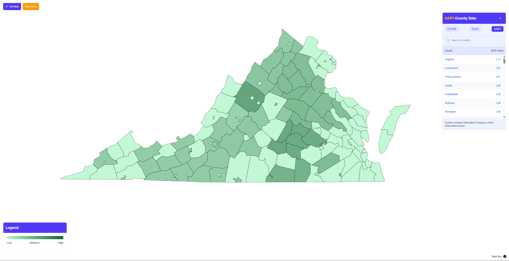

GROWER Lab
In January 2025, I joined GROWER, the Grid Resilience, Outage, Weather, and Emergency Response lab at Georgia Tech as an undergraduate researcher. During my time, I have acquired skills such as data management, data processing and analysis, data visualization, and web development. We have leveraged tools such as GeoPandas and MatPlotLib to help create informative graphics that represent various types of power outage data at a zipcode and county level for the United States.



